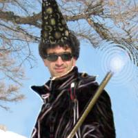

Introduction
Documentation
Downloads
Forum
Credits
Introduction |
Documentation |
Downloads |
Forum |
Credits |
It's a machine-learning library, written in simple C++ and distributed now under a BSD license.
Torch is currently developed at Idiap Research Institute, in Switzerland mountains.
Update: You might want to have a look at Torch5. We will update this website soon...
| The Torch Team | ||
|---|---|---|
|  | ||
| Ronan Collobert (The Guru) |
Samy Bengio (Distributions Wizard) |
Johnny Mariéthoz (Capt'ain Debug) |
|
Release 3.1
August 11, 2004 |
|
Torch 3 Vision
A full additional package for machine learning applied to vision applications is now available. Have a look here. |
If you are using Torch for your scientific research, please refer to the following paper:R. Collobert, S. Bengio, and J. Mariéthoz. Torch: a modular machine learning software library. Technical Report IDIAP-RR 02-46, IDIAP, 2002.
- A lot of things in gradient machines, that is, machines which could be learned with a gradient descent. This includes multi-layered perceptrons, radial basis functions, mixtures of experts, convolutional networks and even time-delay neural networks. In fact a lot of "modules" are available that you can plug as you want to get what you need.
- Support vector machines, in classification and regression. As fast as the old stand-alone program SVMTorch II, but with the powerful environment of the library.
- Ensemble models such as bagging or adaboost.
- Non-parametric models such as K-nearest-neighbors, Parzen regression and Parzen density estimator.
- Distributions stuff, like Kmeans, Gaussian mixture models, hidden Markov models, input-output hidden Markov models, and Bayes classifier.
- Speech recognition tools (Embedded training and large vocabulary decoding).
Torch3 has been successfully tested on Linux, SunOS, FreeBSD, OSF1, Mac OS X and even MS Windows.
Seven reasons to use Torch3:
You cannot imagine what we are doing for you!
- It's free
- It's modular
- It's growing
- It has been though to be efficient
- It has been designed to be intuitive
- It contains a lot of state-of-the-art algorithms
- Even if you don't like coding, it contains nice examples
- Torch3 is free, distributed under a BSD license. That's pretty cool for you, but we need your feedback. Cite Torch in your papers! Advertise it! Send us a mail, an e-mail, something which says that you're using the library, and may encourage us. A nice postcard, a picture from your country (or of your girlfriends!), or even money. We are reachable at the following address:
Ronan Collobert and Samy Bengio and Johnny Mariéthoz
Idiap Research Institute
Centre du Parc
Rue Marconi 19
CP 592
1920 Martigny
Switzerland
- If you have implemented a new machine algorithm or something wich could be cool to be added to the library, send us your code! We need your contribution!